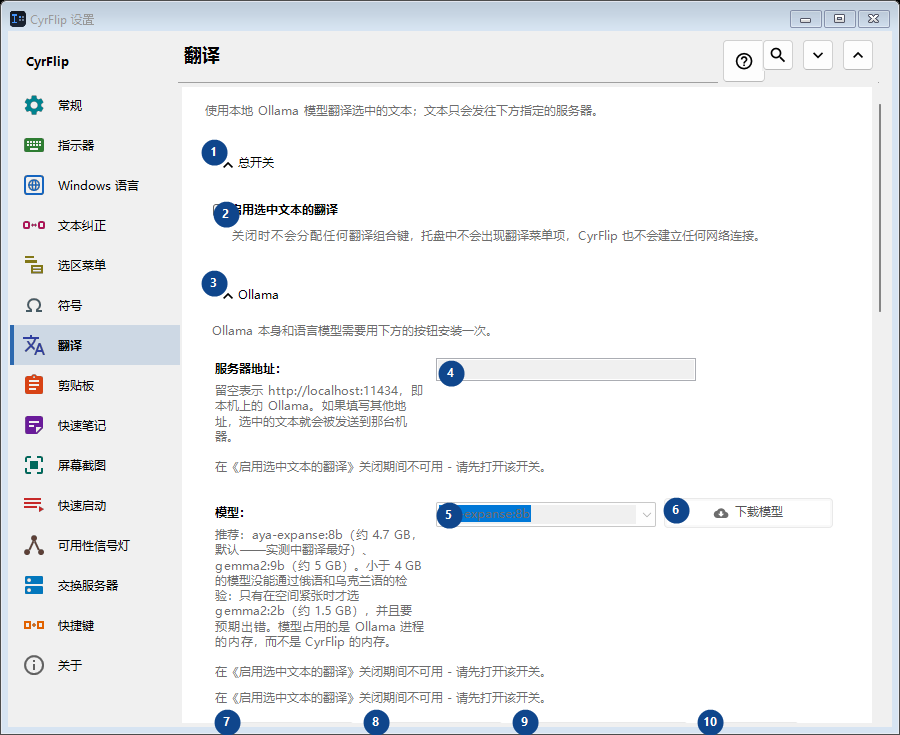
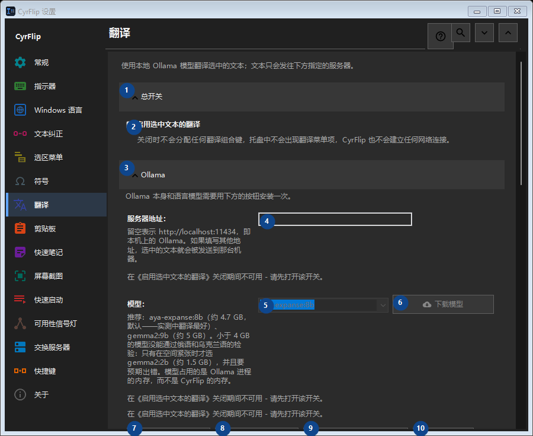

翻译
用途
使用本地 Ollama 模型翻译选中的文本；文本只会发往下方指定的服务器。


使用顺序
设置立即生效，无须按固定顺序操作；请使用以下分组。
界面元素
1. 总开关
需要执行上述操作时使用此命令。接受前请阅读确认提示。
你的快捷键2. 启用选中文本的翻译
关闭时不会分配任何翻译组合键，托盘中不会出现翻译菜单项，CyrFlip 也不会建立任何网络连接。
你的快捷键3. Ollama
需要执行上述操作时使用此命令。接受前请阅读确认提示。
你的快捷键4. 服务器地址：
在《启用选中文本的翻译》关闭期间不可用 - 请先打开该开关。 此控件当前不可用。请先启用相应功能或选择条目。
你的快捷键5. 模型：
在《启用选中文本的翻译》关闭期间不可用 - 请先打开该开关。 此控件当前不可用。请先启用相应功能或选择条目。
你的快捷键6. 下载模型 - 模型：
在《启用选中文本的翻译》关闭期间不可用 - 请先打开该开关。 此控件当前不可用。请先启用相应功能或选择条目。
你的快捷键7. 安装 Ollama
在《启用选中文本的翻译》关闭期间不可用 - 请先打开该开关。 此控件当前不可用。请先启用相应功能或选择条目。
你的快捷键8. 启动 Ollama
在《启用选中文本的翻译》关闭期间不可用 - 请先打开该开关。 此控件当前不可用。请先启用相应功能或选择条目。
你的快捷键9. 检查连接
在《启用选中文本的翻译》关闭期间不可用 - 请先打开该开关。 此控件当前不可用。请先启用相应功能或选择条目。
你的快捷键10. 取消
需要执行上述操作时使用此命令。接受前请阅读确认提示。 此控件当前不可用。请先启用相应功能或选择条目。
你的快捷键11. 翻译时自动启动 Ollama
在《启用选中文本的翻译》关闭期间不可用 - 请先打开该开关。 此控件当前不可用。请先启用相应功能或选择条目。
你的快捷键12. 保持模型驻留内存（分钟）：
在《启用选中文本的翻译》关闭期间不可用 - 请先打开该开关。 此控件当前不可用。请先启用相应功能或选择条目。
你的快捷键13. Ollama 本身和语言模型需要用下方的按钮安装一次。
选择或输入旁边标签所指的值。继续前请检查。 此控件当前不可用。请先启用相应功能或选择条目。
你的快捷键14. 等待模型加载最长时间（秒）：
在《启用选中文本的翻译》关闭期间不可用 - 请先打开该开关。 此控件当前不可用。请先启用相应功能或选择条目。
你的快捷键15. Ollama 本身和语言模型需要用下方的按钮安装一次。
选择或输入旁边标签所指的值。继续前请检查。 此控件当前不可用。请先启用相应功能或选择条目。
你的快捷键16. 翻译方向
需要执行上述操作时使用此命令。接受前请阅读确认提示。
你的快捷键17. 添加方向...
在《启用选中文本的翻译》关闭期间不可用 - 请先打开该开关。 此控件当前不可用。请先启用相应功能或选择条目。
你的快捷键18. 结果
需要执行上述操作时使用此命令。接受前请阅读确认提示。
你的快捷键19. 将翻译放入剪贴板
在《启用选中文本的翻译》关闭期间不可用 - 请先打开该开关。 此控件当前不可用。请先启用相应功能或选择条目。
你的快捷键20. 立即用翻译替换选中的文本
在《启用选中文本的翻译》关闭期间不可用 - 请先打开该开关。 此控件当前不可用。请先启用相应功能或选择条目。
你的快捷键21. 在翻译旁显示原文
在《启用选中文本的翻译》关闭期间不可用 - 请先打开该开关。 此控件当前不可用。请先启用相应功能或选择条目。
你的快捷键22. 自动关闭窗口（秒）：
在《启用选中文本的翻译》关闭期间不可用 - 请先打开该开关。 此控件当前不可用。请先启用相应功能或选择条目。
你的快捷键23. 在《启用选中文本的翻译》关闭期间不可用 - 请先打开该开关。
选择或输入旁边标签所指的值。继续前请检查。 此控件当前不可用。请先启用相应功能或选择条目。
你的快捷键